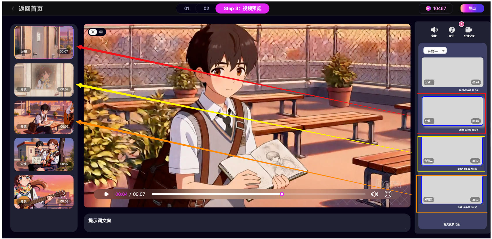

音量
音乐
分镜记录
00:07
00:07
00:07
00:07
暂无更多记录
音量
音乐
分镜记录
分镜一
00:07
00:07
分镜三
00:07
00:07
暂无更多记录
X
替换当前分镜视频
2021-03-02 18:30
2021-03-02 18:30
2021-03-02 18:30
2021-03-02 18:30
分镜记录
1. 入口位置：界面右侧侧边栏新增「分镜记录」的入口；
2. 分镜记录排列：按照分镜列表排列，所有的分镜历史记录统一放在一起。
3. 分镜卡片：
- 缩略图：视频的首帧；
- 归属：每个分镜需要有标识，归属属于哪条分镜的历史视频。
- 生成时长：在右下角展示生成时长；
- 生成时间：生成该视频的时间；
4. 支持根据分镜标签筛选。
1
1
分镜一
分镜一
分镜二
分镜三
预览
1. 用户点击单个分镜，则拉起预览弹窗；
2. 操作：支持【使用当前分镜视频】一键替换；
逻辑： 1. 自动匹配：系统识别该历史记录原始归属，例如属于分镜一； 2. 用户点击按钮后，系统将其视频源替换为当前选中的历史记录。3. 替换成功后，左侧列表自动滚动并选中当前的分镜。 4. 被替换的旧分镜视频，则回归到分镜记录中。
3. 替换成功时，弹出toast“视频替换成功”
2
2
下载
总流程
生成视频 -> 进入右侧全局流 -> 用户浏览历史 -> 点击任意卡片 -> 弹窗预览 -> 点击“使用” -> 系统自动定位回原分镜并替换。
3

分镜列表选中与实际使用的分镜一一对应
4
5
新增,删除,更新,替换成功
1. 新增分镜：当在“原分镜 2”后新增分镜时，新分镜变为“分镜 3”，原有的“分镜 3”及之后的所有分镜序号自动 +1。
右侧历史记录：
- 序号即时更新：右侧列表的标题（如“分镜三”）及该分镜下的所有历史记录标签必须即时重命名（例如原分镜 3 的记录需批量更名为分镜 4 的记录）。当左侧新增的分镜加载/生成完成后，右侧面板才正式触发“列表刷新”，展示该新分镜的第一条生成记录。
2. 删除分镜：当用户删除左侧分镜时，则右侧的分镜同步“自动补位”。
3. 更新/重新生成：当用户修改提示词后点击“重新生成”，并生成成功时，右侧：最新生成的视频自动插入到该分镜列表的第一位。该新卡片显示选中态。
4. 替换成功：当用户在右侧点击某条历史记录，并在弹窗中点击“使用当前分镜视频”后：弹窗关闭，Toast 提示“替换成功”。则右侧视频：
- 原旧视频：取消其 当前使用 标签；将其作为一条普通历史记录展示在列表中
- 新的当前视频：将刚刚选中的那条历史记录标记为使用中。